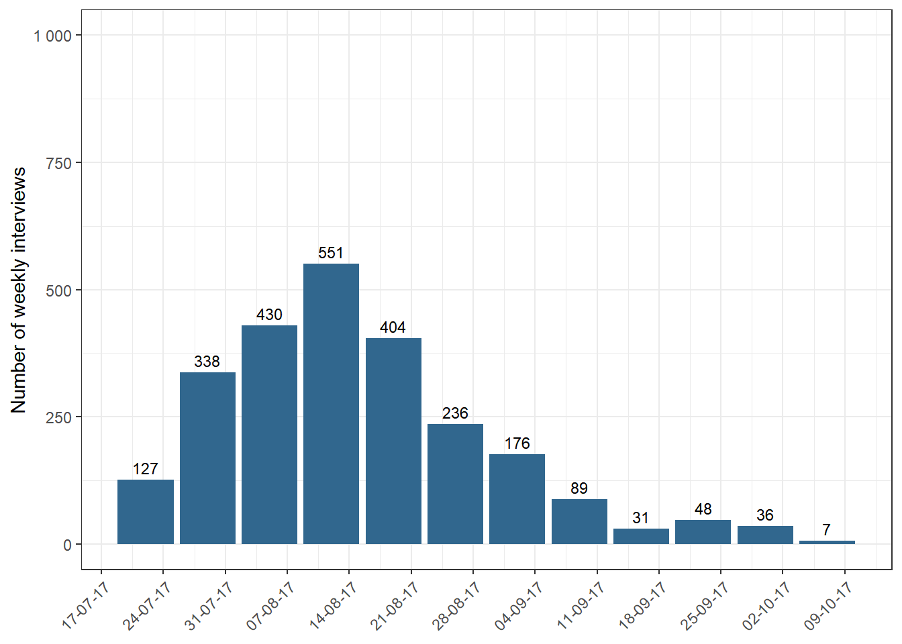
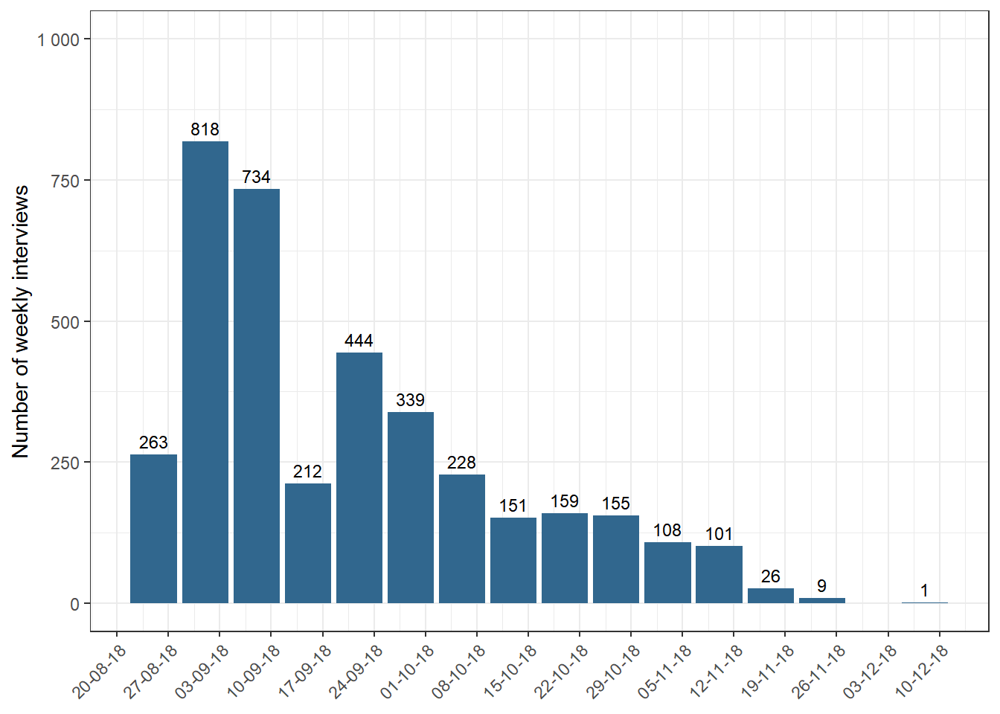
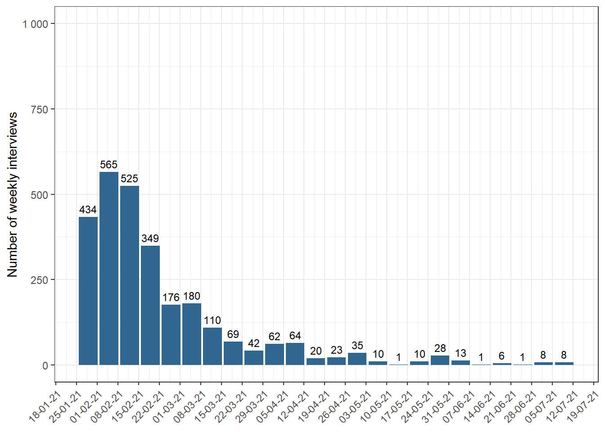

Section 3 Survey Implementation
3.1 General characteristics of the data collection
Executing entity
Given ELSOC’s quality and transparency standards, an independent institution implemented ELSOC, after a public tender award. We have had three public tenders: in 2016, 2018 and 2020, each covering two study measurements. That is, waves 2016 and 2017 (Original Sample), waves 2018 and 2019 (Original and Refreshment Samples), and waves 2021 and 2022 (Original and Refreshment Samples), respectively.
The Micro-Data Center (CMD) of the Faculty of Economics and Business at the University of Chile has won the three tenders, so it has been in charge of the development of the survey since its beginning. The bidding conditions and agreement with CMD contemplate the highest quality standards and assure adequate protection of the personal contact data from study participants.
We describe below some of the criteria and practices applied to ensure the quality of data collection and processing:
Questionnaire pilot
Each pilot of ELSOC questionnaire followed the ELSOC survey mode to test the instrument and evaluate the operational performance of the survey.
The pilot is carried out in the months before the official survey, followed by a round of focus groups with the interviewers to obtain relevant recommendations for the final study. We use the information obtained to introduce changes to the questionnaires and define adjustments to the interviewer training program.
We use a random sample from the Metropolitan Region for the pilot process, obtained from the census developed by the CMD for the original sample.
Fieldwork planning and execution
The selection and training of site coordinators, interviewers and supervisors is a fundamental pillar of the survey. Therefore, it is essential that both coordinators and interviewers fully understand the study and its objective so that they can argue the importance and functionality of the information they are collecting.
A first step is the selection of Site Coordinators, who are in charge of leading the team of interviewers in each administrative zone (sites). We select people with experience in this position in previous waves of the project and/or with expertise in complex surveys.
In the case of interviewers, we invite those who had participated in previous waves, and the evaluation of their work was satisfactory. We also asked interviewers who had participated in the CMD’s last survey projects.
For each data collection process, we train interviewers and supervisors on aspects of the study (objectives, coverage, types of interviewees, etc.), methodological characteristics of the application format and the questionnaire.
Additionally, we developed and used an Interviewer’s Manual for Implementing ELSOC, guidance documents and protocols for the application of the questionnaire. These include:
Visit Protocol: first contact with the house, first contact with the household and arranging interviews when it is not possible to interview at the time of the visit.
Complex Case Protocol: scenario of refusals, the scenario of more than four face-to-face attempts without contact, barriers to access to the household, no contact with the household. It also contemplates recuperation strategies.
Questionnaire Application Protocol: description of the study, informed consent, application of questions, handling of interruptions, delivery of gift cards.
Field Protocol: information backup, progress control, contact registry.
We adapted the documents to meet the follow-up requirements of a previously interviewed sample.
Fieldwork quality control and assurance
From the beginning of the survey and throughout its execution, supervision and quality control strategies are constantly carried out, aimed not only at monitoring the progress of the study but also at detecting early and in real-time errors that occurred during the survey, behavioural problems among the interviewers, among other aspects.
We have implemented the following early warning strategies and corrective measures during the survey process:
The site coordinator reviews 100% of the surveys collected in terms of the observations recorded by the interviewer. This stage verifies that the person chosen in the sampling process has actually been interviewed and confirms the correct filling out of the route sheet, schedule and duration of the interview.
We supervise surveys collected by people other than the team of interviewers who conducted the registry. For this purpose, a randomly selected percentage of the sample (between 10 and 25% of the complete sample, depending on the wave) is re-contacted to verify the answers to key questions, detect and correct in time any possible biases of the interviewer team, application errors, and potential serious faults such as falsification of the surveys.
Weekly feedback to interviewers from zone chiefs, based on survey review and supervision results.
Ongoing verification of the information collected by the central team to the database and validation registry.
Weekly report to the COES team informing on the state of progress of the survey.
Monitoring Strategy
An essential aspect of ELSOC’s ongoing operation is to ensure that we follow up with the interviewees selected in the sample over time. Therefore, we defined loyalty and monitoring strategies to reduce attrition.
Some of the measures implemented are:
Obtaining, saving and updating relevant information to ensure adequate contact: name of the interviewee, contact information (telephone number and e-mail), and essential aspects for identification. We save and use this information following strict confidentiality standards.
Conduct pre-contact to arrange interviews and plan the field before the survey date. Each interviewer receives from the site coordinator data on appointments made with ELSOC participants and uses a specific interview protocol for re-interviews.
Formation of teams of interviewers with varied profiles, favouring those with experience in previous waves of ELSOC or other complex surveys. The interviewers and coordinators are trained in elements specific to the position and technical aspects of the questionnaire and the study, emphasising the interview protocol.
Use of letters of introduction for each interviewee, signed by the Director of the Microdata Center, explaining the study’s objectives, the institutions in charge, the guarantee of confidentiality of the data and the granting of an incentive.
Grant a monetary incentive to the interviewees after completing the survey. The incentive is a Giftcard for supermarkets or related businesses. The incentive was $6,000 during the 2016, 2017, 2018 and 2019 waves. During the 2021 wave, the monetary incentive was increased to $9,000.
Re-contact in the event of rejections or reach problems with interviewers other than the original one, who must have a profile appropriate to the observed characteristics of the not achieved sample and more significant experience in applying similar surveys. These interviewers have an additional economic incentive to implement surveys defined as “recovered”.
In cases where the respondent has moved, we ask the interviewers to inquire about the new address and make efforts to interview the respondent at the new address. This applies both to address changes at the commune level in the same region, or another commune in a different region. In the latter case, they forward the folio to the coordinator in charge of the respondent’s new commune of residence.
Christmas greetings or similar gestures are sent to ELSOC participants by e-mail on relevant dates. In addition, we provide brochures with the main results of previous waves so that interviewees know about the uses of the collected data and its relevance to the country.
3.2 Incidents in the survey application
Specific events associated with the implementation of the 2016, 2017, 2018, 2019 and 2021 waves are detailed below:
3.2.1 2016 Wave Implementation
The survey implementation lasted over 20 weeks, from August to December 2016 (see Figure 3.1). We distributed 132 interviewers in 4 work sites for the field implementation, each one led by a trained group coordinator.
The period was more extended than initially predicted (we estimated it to last between 8 and 12 weeks, but we finally extended it to 20 weeks). The main difficulties encountered and the measures adopted to solve the events were as follows:
In its technical proposal, the CMD committed to a fieldwork period of 8 weeks. This time estimate was based on recent studies but was inadequate given the difficulties in accessing the sample and its dispersion.
The biggest problem occurred in the Metropolitan Region, which, unlike the other regions, did not consider an oversized sample according to historical response rates in household surveys with a random selection of interviewees. We expanded the sample to solve this problem (see Stage 5: Increasing the sample size for more details), which resulted in an additional survey period.
We encountered difficulties in recruiting and retaining interviewers for the project due to the problem of accessing the sample and its dispersion, which made the proposed payment to the interviewers, compared to other parallel projects (inside and outside the Center), relatively less attractive. To solve this problem, we gradually increased the amount paid and the flexibility provided to the interviewers.
CMD accorded the final closure of the survey fieldwork in agreement with COES once the totality of the oversized sample was covered5. We closed the fieldwork with 2,984 surveys completed.
Figure 3.1: Number of weekly interviews, wave 2016

Data collection indicators
The following are the Response Rate 1 (RR1, as defined by AAPOR), Cooperation Rate 1 (COOP1), Refusal Rate 1 (REF1) and Contact Rate 1 (CON1)6
| Indicator | Original Sample |
|---|---|
| Contact Rate | 72.6% |
| Cooperation Rate | 86.0% |
| Refusal Rate | 8.9% |
| Response Rate | 62.4% |
Data correction for anomalous cases: 2016 and 2017 waves
In the context of executing the third wave of the ELSOC study (2018), we detected the falsification of a limited number of cases throughout the study in waves 2016 and 2017.
During the monitoring stage of the interviewers’ work in 2018, the Microdata Center (CMD) detected and reported that a set of cases included in the panel sample were faked.
Due to the slow progress of ELSOC’s 2018 field goals in Tarapacá and Valparaíso, they sent new interviewers and detected these problems. Specifically, they found systematically falsified surveys: conducted with different people than those included in the sample or where the interviewers requested information from third parties.
This led to an exhaustive review process, in which we detected 56 faked cases in the 2016 field and 47 in the 2017 field, concentrated in the regions of Tarapacá (11 cases in 2016 and 11 in 2017) and Valparaíso (45 cases in 2016 and 37 in 2017).
CMD’s field strategy focuses on experienced interviewers, assigning the same cases to the interviewers over time, according to the recommendation of the specialized literature. The problem focused on some specific interviewers in those areas, which they did not detect during the field supervision of the first two waves.
The fake cases represent 1.9% of the actual sample size of ELSOC 2016 (N = 2,984) and 1.9% of 2017 (N = 2,522), so we consider them to have a marginal impact at the overall level. Despite this, we decided to exclude counterfeit cases from the databases, and to generate and make available a corrected version of the 2016 and 2017 databases. We fixed the weights considering the elimination of these cases.
To avoid these problems in the future, we modified the supervision protocols, increasing face-to-face oversight and the percentage of cases supervised per interviewer. In addition, we implemented an interviewer rotation system so that the same interviewers do not collect the sample in more than one round.
3.2.2 2017 Wave Implementation
Data collection was carried out over twelve weeks, between July and October 2017 (see Figure 3.2). 120 interviewers were distributed in the 17 work sites for the field implementation.
The field lasted a more extended period than predicted, as it was estimated to last nine weeks, finally extending to twelve. However, data collection was faster than the first wave, which lasted 20 weeks. This quicker time was due to the availability of contact information for the interviewers obtained in the previous wave.
The duration of the fieldwork over the original estimate responded to how challenging it was to contact the interviewees in the Metropolitan and Valparaíso regions.
The closure of the survey fieldwork took place once the entire sample was covered. We completed the fieldwork with 2,521 surveys conducted.
Figure 3.2: Number of weekly interviews, wave 2017
Data collection indicators
The following are the Response Rate 1 (RR1, as defined by AAPOR), Cooperation Rate 1 (COOP1), Refusal Rate 1 (REF1) and Contact Rate 1 (CON1):
| Indicator | Original Sample |
|---|---|
| Contact Rate | 88.7% |
| Cooperation Rate | 93.1% |
| Refusal Rate | 6.0% |
| Response Rate | 82.6% |
3.2.2.1 Falsified cases in wave 2017
After the procedures applied by the CMD in 2018, we found and corrected anomalies in surveys conducted in 2016 and 2017. For more details of the problem and its correction, see Data correction for falsified cases: Waves 2016 and 2017.
3.2.3 2018 Wave Implementation
We developed the fieldwork between August and December 2018, with an estimated time (15 weeks, approximately) (see Figure 3.3). There were 189 interviewers distributed in 18 work sites to execute the fieldwork.
We included the refreshment sample during this fieldwork, which generated a difficulty for the interviewers since they had to explain and motivate the participation of families and interviewees in the study.
On the other hand, interviewees of the follow-up sample (Original sample) of 2016-2017 had contact difficulties due to a higher presence of registered address changes than in previous versions of the survey. 6.9% had moved to a different address.
Another challenge we faced in the wave is related to the fake cases detected (see Data correction for fake cases: Waves 2016 and 2017). This problem implied an exhaustive on-site review of these cases, while strengthening the control system, considering the following:
Increase the percentage of surveys monitored from 10% to 15% in 2018. This ensures the control of at least 20% of the work performed by each interviewer.
For future project waves, we defined a rotation of interviewers of the same interviewee.
Registration of the interviewers involved to avoid their consideration in future study applications. Regarding the general dynamics of the work, we created economic incentives for the interviewers to achieve the expected sample. Likewise, we arranged transport mechanisms for the interviewers to cover the entire sample on a schedule.
The survey fieldwork ended with the agreement of COES once we covered the entire sample. The fieldwork closed with 2,274 surveys in the follow-up sample and 1,523 surveys in the refreshment sample.
Figure 3.3: Number of weekly interviews, wave 2018
Data collection indicators
The following are the Response Rate 1 (RR1, as defined by AAPOR), Cooperation Rate 1 (COOP1), Refusal Rate 1 (REF1) and Contact Rate 1 (CON1):
| Indicator | Original Sample | Refreshment Sample |
|---|---|---|
| Contact Rate | 86.0% | 66.0% |
| Cooperation Rate | 93.0% | 88.0% |
| Refusal Rate | 5.0% | 8.0% |
| Response Rate | 80.0% | 58.0% |
3.2.4 2019 Wave Implementation
We scheduled ELSOC 2019 data collection to begin on Saturday, the 19th of October 2019. However, due to the Chilean Social Outburst that started on the 18th of October 2019, we suspended the fieldwork until Thursday, the 21st of November, when the data collection finally began. Therefore, we surveyed during the Social Outburst period, making its execution difficult.
The work lasted for 13 weeks (we decided to pause the data collection during the last three weeks of February 2020, given the exhaustion of the sample and the field team) (see Figure 3.4). There were 143 interviewers in the field, distributed in 16 work sites, administered by trained zone coordinators.
Figure 3.4: Number of weekly interviews, wave 2019

Data collection indicators
The following are the Response Rate 1 (RR1, as defined by AAPOR), Cooperation Rate 1 (COOP1), Refusal Rate 1 (REF1) and Contact Rate 1 (CON1):
| Indicator | Original Sample | Refreshment Sample |
|---|---|---|
| Contact Rate | 86.0% | 87.0% |
| Cooperation Rate | 93.0% | 95.0% |
| Refusal Rate | 5.0% | 3.0% |
| Response Rate | 80.0% | 83.0% |
3.2.5 2021 Wave Implementation
The health crisis caused by the COVID-19 pandemic and its associated restrictions implied changing the methodology of application of the survey from face-to-face to remote through a telephone survey (For more details, see Questionnaire 2021: Survey during the COVID-19 Pandemic). This change in collecting data introduced a tremendous logistical and operational challenge since ELSOC had surveyed in person since its origins.
The COVID-19 pandemic also affected the traditional ELSOC survey date, which we scheduled to begin in October 2020. However, the fifth wave survey started on January 30th, 2021, with the assignment of the sample to trained interviewers. The reasons for postponing the survey period were mainly waiting for more favourable sanitary and lockdown conditions that would allow a face-to-face survey (however, it soon became apparent that it was impossible to maintain the face-to-face modality). We extended the fieldwork until mid-June 2021. Nevertheless, we carried out most surveying between February and April 2021 (see Figure 3.5).
Due to sample attrition and the deterioration of the team of interviewers given unsuccessful contact attempts, we decided to change the application methodology per sampling unit in May. We formed a group of interviewers dedicated exclusively to reviewing the sample on a given working day.
Figure 3.5: Number of weekly interviews, wave 2021
Data collection indicators
The following are the Response Rate 1 (RR1, as defined by AAPOR), Cooperation Rate 1 (COOP1), Refusal Rate 1 (REF1) and Contact Rate 1 (CON1):
| Indicator | Original Sample | Refreshment Sample |
|---|---|---|
| Contact Rate | 78.0% | 87.3% |
| Cooperation Rate | 83.7% | 76.1% |
| Refusal Rate | 11.0% | 8.8% |
| Response Rate | 65.2% | 66.5% |
3.3 Survey Attrition
The attrition of the sample is shown below:
|
Achieved Sample
|
Attrition Rate
|
|||
|---|---|---|---|---|
| Measurement | Original Sample | Refreshment Sample | Original Sample | Refreshment Sample |
| 2016 | 2927 | |||
| 2017 | 2473 | 15.5% | ||
| 2018 | 2229 | 1519 | 9.9% | |
| 2019 | 2153 | 1264 | 3.4% | 16.8% |
| 2021 | 1739 | 1001 | 19.2% | 20.8% |
- By gender:
|
Achieved Sample
|
Attrition Rate
|
|||
|---|---|---|---|---|
| Measurement | Male | Female | Male | Female |
| Original Sample | ||||
| 2016 | 1163 | 1764 | ||
| 2017 | 953 | 1520 | 18.1% | 13.8% |
| 2018 | 841 | 1387 | 11.8% | 8.8% |
| 2019 | 807 | 1346 | 4.0% | 3.0% |
| 2021 | 631 | 1108 | 21.8% | 17.7% |
| Refreshment Sample | ||||
| 2018 | 607 | 912 | ||
| 2019 | 482 | 782 | 20.6% | 14.3% |
| 2021 | 378 | 623 | 21.6% | 20.3% |
- By age segment:
|
Achieved Sample
|
Attrition Sample
|
|||||||
|---|---|---|---|---|---|---|---|---|
| Measurement | 19-29 | 30-49 | 50-64 | 65 or over | 19-29 | 30-49 | 50-64 | 65 or over |
| Original Sample | ||||||||
| 2016 | 506 | 1157 | 839 | 425 | ||||
| 2017 | 407 | 962 | 734 | 370 | 19.6% | 16.9% | 12.5% | 12.9% |
| 2018 | 340 | 863 | 687 | 338 | 16.5% | 10.3% | 6.4% | 8.6% |
| 2019 | 327 | 838 | 666 | 322 | 3.8% | 2.9% | 3.1% | 4.7% |
| 2021 | 269 | 685 | 546 | 239 | 17.7% | 18.3% | 18.0% | 25.8% |
| Refreshment Sample | ||||||||
| 2018 | 341 | 579 | 418 | 181 | ||||
| 2019 | 271 | 472 | 369 | 152 | 20.5% | 18.5% | 11.7% | 16.0% |
| 2021 | 216 | 391 | 282 | 112 | 20.3% | 17.2% | 23.6% | 26.3% |
- By educational level:
|
Achieved Sample
|
Attrition Rate
|
|||||||
|---|---|---|---|---|---|---|---|---|
| Measurement | Primary | Secondary | Technical | University | Primary | Secondary | Technical | University |
| Original Sample | ||||||||
| 2016 | 656 | 1251 | 483 | 535 | ||||
| 2017 | 580 | 1062 | 396 | 434 | 11.6% | 15.1% | 18.0% | 18.9% |
| 2018 | 512 | 977 | 358 | 380 | 11.7% | 8.0% | 9.6% | 12.4% |
| 2019 | 490 | 953 | 341 | 368 | 4.3% | 2.5% | 4.7% | 3.2% |
| 2021 | 363 | 757 | 283 | 336 | 25.9% | 20.6% | 17.0% | 8.7% |
| Refreshment Sample | ||||||||
| 2018 | 283 | 633 | 253 | 347 | ||||
| 2019 | 254 | 537 | 206 | 264 | 10.2% | 15.2% | 18.6% | 23.9% |
| 2021 | 167 | 426 | 175 | 233 | 34.3% | 20.7% | 15.0% | 11.7% |
Although it is required to achieve the greatest number of successful interviews, it is necessary to specify a cut-off point due to the impossibility of establishing contact or achieving a response from the household/interviewee↩︎
For more information on the identification of case disposition codes and calculation of outcome rates, see AAPOR (2016). Standard Definitions. Final Dispositions of Case Codes and Outcome Rates for Surveys↩︎